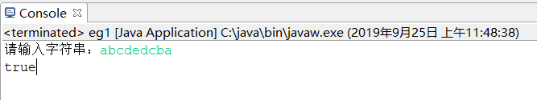

使用递归方式判断某个字串是否是回文（ palindrome ）。
1. 设计思想
在判断字符串是否是回文的时，采用递归法，首先要分析出重复做的是什么事情，这里是要重复判断两端的字符是不是相等的，直到剩下最后一个或者0个字符的时候。
2. 源程序代码
package eg1;
import java.util.*;
public class eg1 {
public static void main(String[] args)
{
System.out.print("请输入字符串：");
Scanner scanner=new Scanner(System.in);
String s=scanner.nextLine();
boolean flag = find(s,0,s.length());
System.out.println(flag);
}
private static boolean find(String str, int start, int length) {
if(length<=1)
return true;
else if(str.toCharArray()[start]==str.toCharArray()[length-1]){
return find(str,start+1,length-1);
}
return false;
}
}
3. 运行结果截图

4. 编程总结分析
在判断回文是应注意字符数为单数时的中间字符/只有一个字符/空字符时的情况。